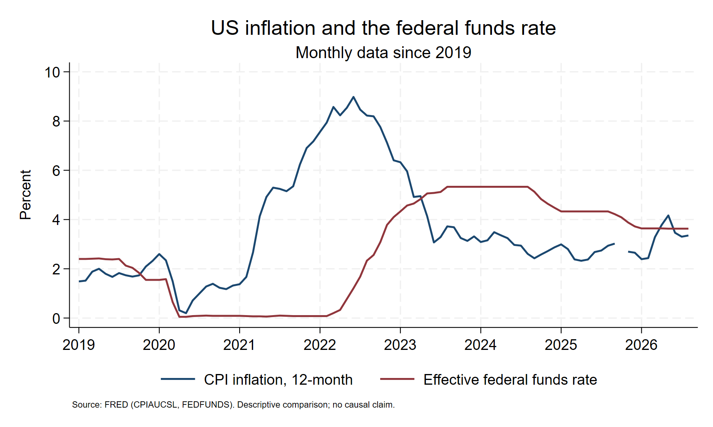

Scan for slides & demos
Real-world Finance
Research · Teaching · Supervision
LLMs Beyond Chat:
An Introduction and Overview
→ next O overview S speaker notes
0:00–2:00 (2 minutes). Welcome researchers and lecturers, including people who have never used AI. Ask for a show of hands: who has used a chat assistant? Who has given AI a task and watched it work on files? The talk is 40 minutes, followed by a 10-minute demo and 10 minutes of questions. The QR links to these slides and demo resources.
01 · A familiar task
What changes beyond chat?
“Chart US inflation and interest rates from FRED.”
Advice-only chat ☰
Suggests the code You fetch, run and fix it.
Agent with tools ↻
Produces the figure It fetches, runs and checks.
A chat interface can support either workflow.
2:00–6:00 (4 minutes). Copy this exact prompt into an advice-only ChatGPT conversation and then into a coding agent with local Stata access:
Using FRED's public CSV download, make a Stata chart comparing US 12-month
CPI inflation (CPIAUCSL) with the effective federal funds rate (FEDFUNDS)
from January 2019 onward. Calculate inflation as
100 * (CPI this month / CPI 12 months earlier - 1).
Fetch and inspect the data, write a reusable Stata do-file, and run it if
you have access to Stata. Check missing months, units, and one inflation
value. Show the code, chart, sources, and any errors you encountered.
If you cannot run Stata, give me the code and exact steps to run it, and
say what you could not verify. Do not make a causal claim.
Advice-only: copy the suggested code into Stata yourself. If Stata returns an actual error, paste it back into the chat and show the manual repair loop. If it runs cleanly, show the manual download, execution and checks instead; do not manufacture an error.
Agent: use the same prompt in a coding workspace with tool access to local Stata. Let it fetch, write, run, inspect and revise. This workstation can run Stata through the terminal; a dedicated Stata MCP is not configured in this task. A separate Stata MCP would also work if available. Use the saved FRED snapshot and prepared outputs on the demo resources slide if the live run stalls. Tool use does not establish scientific correctness; review the result.
02 · The simple definition
Give a goal. Watch it work.
01
Goal A result to produce.
02
Tools Ways to inspect and act.
03
Feedback Results guide the next step.
Goal → action → result → next action ↺
See OpenAI's agent overview for a current description of multi-step tool use.
6:00–9:00 (3 minutes). Define an agent in ordinary language: software that uses a model and tools to work toward a goal over several steps, using the result of one action to choose the next. It may ask for input or stop at a boundary. A single generated answer, even one containing code, does not show the complete working loop. No claim that all agents are autonomous or share identical access.
03 · What makes it possible
Model + harness
The harness Software around the model
Model Interprets.
⇄
Tools + workspace Read files.
Context Working loop Permissions
Concepts: Anthropic · OpenAI
9:00–12:00 (3 minutes). The model interprets the request and proposes actions. The harness supplies context, routes tool calls, manages the loop and applies controls. Tools perform file edits and command execution and return outputs to the model. The workspace is the environment the tools can reach. A chat window, code editor or terminal can all present this workflow. Local tool execution does not imply a local model.
04 · What a run looks like
One task, several steps
1 Inspect
CSV + definitions
The result of one step changes the next.
12:00–15:00 (3 minutes). Narrate a realistic run without product UI: the agent reads variable names and a data dictionary, writes a short analysis script, runs it, encounters a missing-value issue, changes the script, reruns it, and reports what it did. It can complete work across steps, yet the researcher still chooses the outcome and checks the definition.
05 · What you can add
A skill is a reusable playbook
Request ?
Check my citations Skill ▤
Citation-check workflow Academic Research Suite
Output to review ✓
Sources and flags
Skills guide steps. Tools provide access. You judge the evidence.
15:00–18:00 (3 minutes). The installed Academic Research Suite is a concrete example of a skill package. It routes requests to workflows such as citation checking, literature review and manuscript review. A skill is reusable instructions and supporting material that an agent can load for a task; it is not another model and does not grant access to databases or software on its own. The agent still needs the relevant tools and the researcher still checks sources and claims. Skills can be added or written for local workflows, but review the provenance and instructions of third-party skills before using them. Do not imply that following a citation-check workflow guarantees every citation is valid. Research and teaching use cases appear later in the deck.
06 · Limit one: truth
A plausible result can be wrong
÷
Wrong denominator Check one row.
↕
Duplicate merge Count the rows.
“ ”
Invented citation Open the source.
?
Confident claim Trace the evidence.
Code running ≠ research being correct.
18:00–22:00 (4 minutes). Use the finance demo to illustrate a ratio with the wrong denominator: the script runs, the chart looks plausible, but the research definition is wrong. A merge can multiply observations silently. A citation can look real and point to another paper. A model can confidently narrate a weak or unsupported finding. The right check depends on the claim: inspect definitions, row counts, raw observations and primary sources. Another AI's agreement alone is not independent evidence.
07 · Limit two: action
Terminal access has consequences
Bash / terminal tools Read files
Change the system
Delete files
→
What can it reach?What may it change?
Limit access Review actions Keep recoverable copies
Technical boundaries and approvals: Sandboxing · Approvals
22:00–25:00 (3 minutes). This is a separate limitation from incorrect answers. A coding agent with Bash or terminal access can run commands that change software, system settings or project files, including deleting files within its reach. The specific risk depends on its permissions, sandbox and working directory. A project branch helps recover tracked code but is not a security sandbox and does not restore every deleted untracked file. Use scoped access, inspect consequential commands and keep recoverable copies of valuable data.
08 · For researchers
From data to checked evidence
1 Fetch FRED data
2 Calculate in Stata
3 Check dates and gaps
You decide what the comparison means.

Stata output from public FRED data
25:00–29:00 (4 minutes). This prepared chart uses real public CPIAUCSL and FEDFUNDS data from FRED. The Stata script computes annual CPI inflation from monthly CPI levels, then compares it with the monthly effective federal funds rate since 2019. It names the missing October 2025 CPI observation and leaves a gap rather than silently filling it. A researcher checks units, dates, the calculation and the interpretation. The plot is descriptive; it cannot establish whether interest rates caused inflation to change. The source snapshot and do-file are available in the demo resources.
09 · For lecturers
Build an exercise students can test
1 Choose a learning goal
2 Let the agent build it
3 Test the explanation
You decide what students should learn.
Try it Bond price and yield Yield 4.0%
0% 10%
Price today €82.19
€100 paid in 5 years · no coupons
29:00–33:00 (4 minutes). Invite someone to move the slider and predict what happens to the price. This is a simplified zero-coupon bond that pays €100 in five years: price = 100 / (1 + yield/100)^5. At 0% the price is €100; at 10% it is about €62.09. The exercise makes the inverse price-yield relationship visible, holding the future payment and maturity fixed. A lecturer can ask an agent to build this kind of exercise, then check the formula, boundary values, units, wording and accessibility. The teacher decides whether it serves the learning goal and remains responsible for assessment.
10 · For students
Thesis work: help or handover?
Explore ?
Explain a method Help me understand.
Assist ↔
Draft code I check every choice.
Outsource !
Write the argument Whose reasoning is it?
What is permitted depends on the assignment's AI Index level.
Utrecht University: AI Index for students · AI Index for teachers
33:00–37:00 (4 minutes). Students can use agents to explore methods, practise code, inspect data and perhaps assist with drafts where permitted. They can also delegate a thesis analysis, literature discussion and argument so completely that the submitted work no longer demonstrates their own thinking. Do not present these columns as universal permission categories. At Utrecht University, the teacher or course coordinator sets an AI Index level for a course or assignment; thesis and programme rules may be more specific. Disclosure and prompt records may also be required. Ask what learning outcome the assignment is meant to assess.
11 · For supervisors
Can the student defend the work?
Ask for reasoning, evidence and an honest account of AI use.
37:00–39:00 (2 minutes). A useful supervision discussion asks the student to explain a key design choice, show the data and sources, and reproduce or alter one result. This reveals understanding more directly than judging the polish of prose. Ask students to describe where an agent contributed, in line with the assignment's permitted level and disclosure rules. Avoid treating an AI detector score as proof of misconduct. Utrecht University's current teacher guidance says such software may not be used to confront students or as evidence of suspected AI fraud based on its result.
12 · The takeaway
Give it work. Keep your judgment.
Now let’s watch one work.
39:00–40:00 (1 minute). Summarize the talk in three verbs: scope what the agent can access, watch the actions it takes, and verify the claims made from its output. Agents can take on meaningful technical work for researchers and lecturers; human accountability remains with the person using the result. Introduce the 10-minute demo. The reference package supplies a clearly labelled fallback if the live run stalls.
From FRED to a Stata figure
Output Stata code · Chart · Data audit
Prompt and prepared fallback →
40:00–50:00 (10 minutes). Ask the agent to fetch the two public FRED series and analyze them in Stata. Show the brief (1 minute), download and data inspection (2), creation and execution of a do-file (3), checks and a directed revision (2), and review of the chart, audit and code (2). FRED's public CSV download works without an API key. Stata's built-in import fred uses the keyed API and no key is configured here. A saved snapshot makes the example reproducible if the live network fails. If the run stalls, explicitly say you are switching to the prepared chart and audit; do not imply they were produced live.
What would you try?
What would you keep for humans?
usefinance.github.io/agents
Sources · Getting started · Demo files
50:00–60:00 (10 minutes). Invite concrete tasks from research, course design and thesis supervision. For each idea ask about the input, the access required, the output, what could go wrong, and what a person would need to check. The following slides are optional references for later use.
Reference · Sources checked 23 September 2026
Read more about the concepts
Models, harnesses and data
Demo data: US CPI · Effective federal funds rate · FRED API key guidance
Reference slide, outside the timed talk. These primary sources underpin the definitions and current corrections. Product behavior can vary by version, account, configuration and organization policy.
Reference · Getting started
Pick one tool and a small project
Try: fetch public FRED data, propose a plan, then produce one checked artifact.
Confirm your account access, required software and usage limits before starting.
Optional setup reference. Follow current official documentation rather than copying outdated install commands. Access to a free chat account does not necessarily include the associated coding agent. Subscription quotas and API billing are separate arrangements.
Reference · Copyable prompt
A reusable task brief
Goal: [the result I need]
Inputs: [files, definitions and relevant documentation]
First inspect the inputs and propose a short plan.
Use these rules: [sample, methods, software, output formats].
Keep these files unchanged: [raw inputs].
Save the results to: [output directory].
Run the work. Check: [counts, keys, units, known examples].
Report the changed files, commands run, checks performed,
assumptions and anything that remains unresolved.
Include instructions so I can reproduce the result.Copy prompt
Reference only. Replace each bracketed item with a concrete instruction. Verification requirements should reflect the errors that would matter for the specific task. Avoid asking the agent to choose an unspecified statistical test and immediately write a publication-ready interpretation.
Reference · The 10-minute demo
Live brief and prepared fallback
Live FRED data can change; the saved snapshot reproduces the prepared result.
Reference only. The prepared chart was generated in Stata/SE 18 from the saved FRED CSV on 23 September 2026. Its audit reports one missing CPI month. See the presenter guide for the live download route, fallback and exact commands. Recalculate expected figures when using freshly downloaded data.
Reference · Try another workflow
Choose one output you can inspect
Task Useful completion evidence
Combine a folder of CSV files Input manifest, row counts, duplicate check and repeatable script. Reproduce a figure from a paper Documented sample, definitions, plotted data and comparison. Update a research homepage Preview, checked links and a review of the information published. Build an interactive teaching example Known numerical cases, clear units and accessible controls.
Source repository · Preserved original workshop
Earlier workshop inspiration: Scott Cunningham · Mihail Velikov · Jukka Sihvonen
End of reference material. The prior workshop remains preserved in a fork at the original commit. This updated presentation retains the Utrecht identity and generalizes the core concepts across agents.
 Real-world Finance
Real-world Finance
{kind=link}